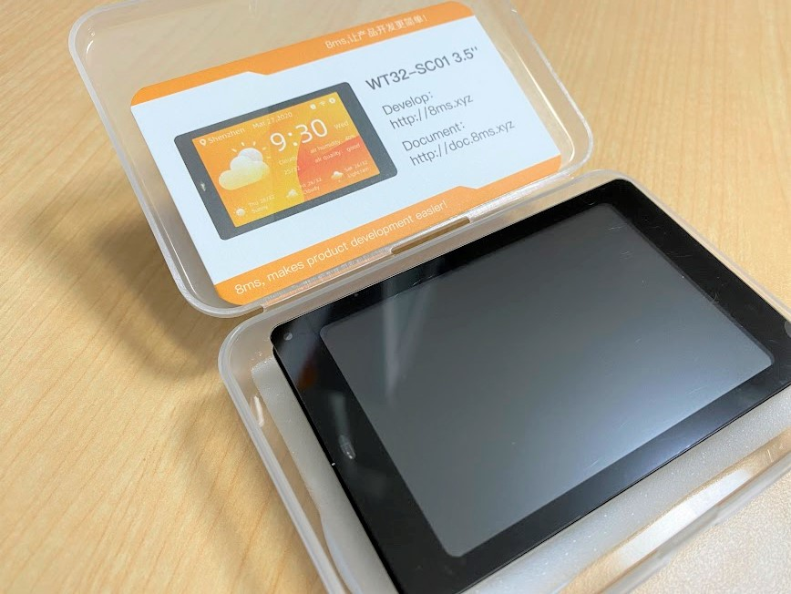
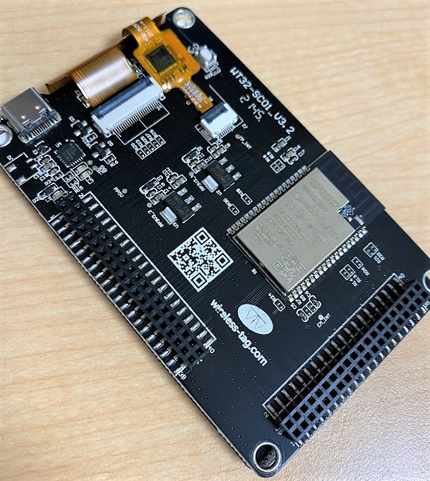
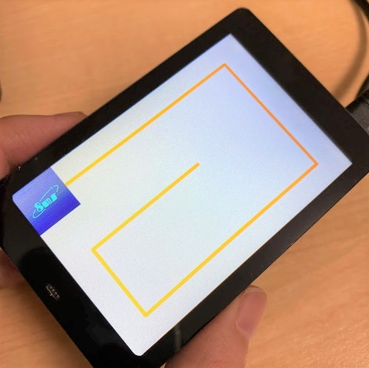
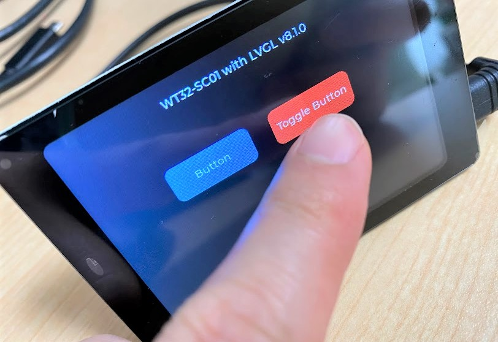
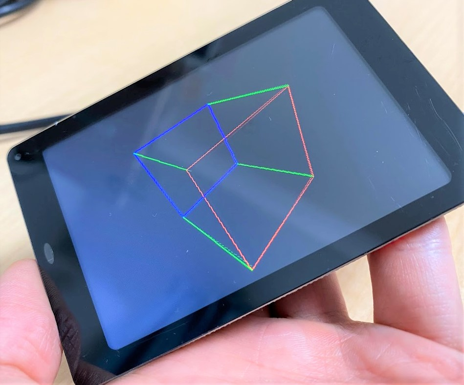

この記事はBanggoodの提供でお届けします。
以前紹介したようにこのブログはBanggoodと提携させていただいており、今回紹介するWT32-SC01もBanggoodからいただいたものとなります。（WT32-SC01のレビューがしたい！と言ったのは自分なので、Banggoodが無理やりこの商品を押しているわけではなく、inajobの一押しアイテム！、という感じです。）
WT32-SC01とは
最近ESP32が搭載されたボードを良く紹介しますが、WT32-SC01もその1つです。

ざっと仕様を紹介します
- 320x480 3.5inchディスプレイ
- 静電容量式タッチ FT6446U
- 8MBのPSRAM搭載
- 拡張端子搭載
- 3.3VのLDOが2つ搭載
- USB Type-C
要はタッチディスプレイ搭載のESP32の開発ボードです。
ディスプレイの解像度も比較的大きく、たくさんの情報が表示できます。 （参考: M5Stackの解像度が320*240なのでその倍の解像度です）
注意点としては・・
- SDカードスロットが無い
- 拡張用ピンヘッダが2mmピッチなのが惜しい
と言ったところでしょうか？

初回起動してみる
購入した状態で電源を入れると8msと呼ばれる開発環境のデモプログラムが動作しました。

8msというのは中国で作られているブラウザで動作する開発環境のようです。
ちょっと気になりますが、ここでは普通のESP32の開発ボードとしてPlatformioを使ってプログラムを開発する方法を見ていくことにします。
LVGL8-WT32-SC01-Arduino を動かしてみる
少し調べると このWT32-SC01で動作するプログラムがGitHub上にいくつか存在しているのに気づきました。 ここでは以下のリポジトリをビルドして書き込みしてみます。
https://github.com/sukesh-ak/LVGL8-WT32-SC01-Arduino
platformioがインストールしてあれば、リポジトリルートでplatformio run -t uploadを実行するだけで、ビルドとファームウェアの更新ができます。
LVGLと呼ばれる組み込み向けのGUI環境が動作しており、タッチパネルも問題なく動作することが確認できました。 またこのリポジトリでは描画用にLovyanGFXを使っており、M5Stackなどと同様に開発が出来そうなことも伺えます。

ここでは試していないですが、Arduino IDEでも同じように開発ができると思います。
WT32-SC01-Exp を動かしてみる
以下のリポジトリもPlatformioで簡単に動かすことが出来ました。
https://github.com/seaniefs/WT32-SC01-Exp
こちらは描画用にTFT_eSPIを使っているようです。

3Dキューブがスムーズにアニメーションしている様子が確認できました。 （ソースコードを見るとディスプレイを全消去しているわけでなく、前フレームで書いた線を打ち消しているだけのようなので、まぁ早く動くのも納得です）
アイデア
この開発ボードはESP32と解像度の大きなディスプレイ、タッチパネルというシンプルな構成が特徴です。
- IoT家電の制御ボード
- デジタルフォトフレーム
- 高解像度を生かしたゲーム(フレームレートを高めるのはコツが必要そう)
- 電子情報端末（小型のパソコンのようなもの）
という感じです。
センサーなどを追加するための拡張端子も数多く引き出されているので、カスタマイズが簡単そうです。
まとめ
WT32-SC01は、ESP32-WROVER-Bの大容量メモリを活用できる、高解像度のディスプレイを備えた開発ボードです。
Raspberry Piを使うほどでもない画面付きのガジェットを作る際のパーツして役立ちそうです。
クーポンコード
さて、ここまで紹介してきたWT32-SC01ですが、今回Banggoodの提供という事で、$38.99 → $34.99で購入できるクーポンを頂いています。
コード： BG324264 (5/16まで)
WT32-SC01をカートに入れ、チェックアウト後にこのクーポンコードを入力することで割引を受けることが出来ます。
有効期限は2022/05/16なので、買いたい方はお早めにどうぞ！（加えて、在庫に限りがあると思うのでお早目に！）


関連記事